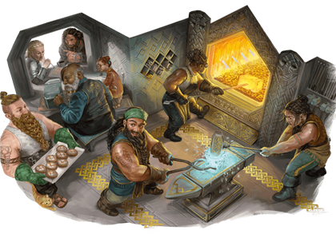

Les nains auraient été façonnés depuis la terre, dans les âges anciens, par une divinité de la forge connue sous différents noms selon les mondes: Moradin, Reorx et d'autres. Ce dieu leur a transmis une affinité naturelle pour la pierre, le métal et la vie souterraine, ainsi qu'une résistance comparable à celle des montagnes, avec une espérance de vie d'environ 350 ans.
Trapus, souvent barbus, les premiers nains ont taillé des cités et des forteresses dans les flancs des montagnes et sous la terre. Leurs plus vieilles légendes évoquent des affrontements contre les monstres des sommets et de l'Outreterre, qu'il s'agisse de géants ou d'horreurs souterraines. Sur certains mondes, les familles issues des premiers foyers des collines ou des montagnes se désignent encore comme nains des collines ou nains des montagnes.